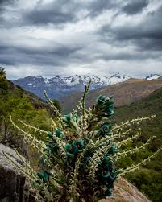
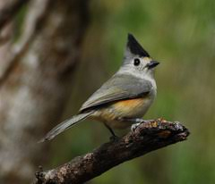

ECOSISTEMA
Flora
La vegetación de la zona está compuesta por diversas especies, predominan las de tipo matorral somontano, encontrando también pastizales en pequeñas porciones dispersas y vegetación ripiaría, las cuales se localizan en áreas que favorecen su crecimiento.

Fauna
La que actualmente domina en la región son el conejo, la ardilla, liebre, tejón, tlacuache, tórtolas, cuervos, zopilotes, búhos, palomas, águilas, cardenales, colibríes. En los ríos y presas las especies dominantes son mojarras, bagre y robalo.
